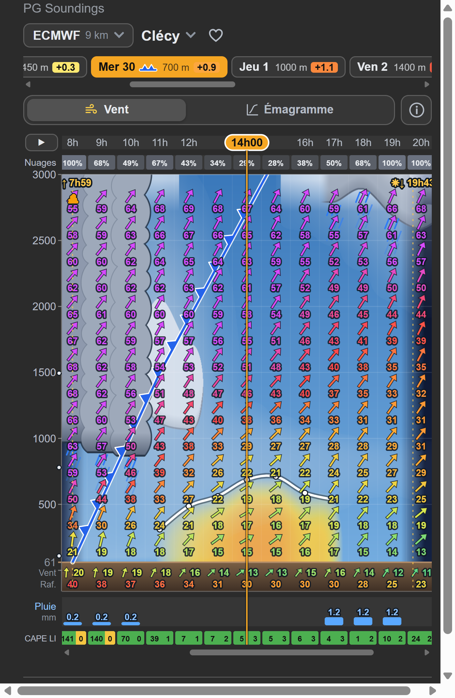

<!doctype html>
<html lang="fr">
<head>
<meta charset="utf-8">
<title>PG Soundings 1.12.0 slides</title>
<!--
  Visuel Instagram des nouveautés de PG Soundings depuis la 1.2.7 (versions 1.3.0 à 1.12.0). Une seule diapo :
    slides.html?f=post   → 1080 × 1350 (carrousel/1.png)
    slides.html?f=story  → 1080 × 1920 (story/1.png)
  Capture du plugin en largeur de téléphone (450 px, rendu 3×), prévision réelle :
    assets/front-clecy.png  graphique ECMWF du 30/09 à Clécy (passage d'un front froid, nuages de pluie)
-->
<style>
  :root { --bg1: #3b2a6b; --bg2: #16202c; --bg3: #0d141c; --fg: #eef2f7; --dim: #b5bfcc; --accent: #ffd24a; }
  html, body { margin: 0; }
  body { font-family: 'Segoe UI', Roboto, Arial, sans-serif; color: var(--fg); overflow: hidden;
    background: radial-gradient(circle at 15% 0%, var(--bg1) 0%, var(--bg2) 48%, var(--bg3) 100%); }
  .page { position: relative; width: 1080px; box-sizing: border-box; padding: 64px 70px 0; }
  .post { height: 1350px; }
  .story { height: 1920px; padding-top: 190px; }
  .tag { display: inline-block; padding: 8px 18px; border-radius: 30px; background: var(--accent); color: #111;
    font-weight: 800; font-size: 24px; letter-spacing: .5px; }
  h2 { margin: 20px 0 0; font-size: 62px; line-height: 1.08; letter-spacing: -1px; }
  h2 em { font-style: normal; color: var(--accent); }
  .sub { margin: 8px 0 0; font-size: 28px; color: var(--dim); }
  /* Capture à gauche, nouveautés à droite */
  .cols { display: flex; gap: 30px; margin-top: 26px; }
  .card { flex: none; border-radius: 22px; overflow: hidden; box-shadow: 0 30px 70px rgba(0,0,0,.6);
    border: 2px solid rgba(255,255,255,.12); background: #2b2b2b; }
  .crop { position: relative; overflow: hidden; }
  .crop img { position: absolute; display: block; transform-origin: 0 0; }
  .cap { padding: 9px 16px 11px; font-size: 21px; color: var(--dim); background: #232323; }
  ul.news { flex: 1; min-width: 0; list-style: none; padding: 0; margin: 0; display: flex; flex-direction: column;
    justify-content: space-between; }
  ul.news b { display: block; font-size: 32px; line-height: 1.2; color: #fff; }
  ul.news span { display: block; margin-top: 4px; font-size: 25px; line-height: 1.3; color: var(--dim); }
  .also { margin: 26px 0 0; font-size: 25px; line-height: 1.4; color: var(--dim); }
  .also b { color: var(--accent); }
  .foot { position: absolute; bottom: 44px; left: 70px; right: 70px; display: flex; justify-content: space-between;
    font-size: 25px; color: #8f9bab; }
  .story .foot { bottom: 250px; }
  .foot b { color: var(--accent); }
</style>
</head>
<body>
<script>
  const q = new URLSearchParams(location.search);
  const story = q.get('f') === 'story';

  // Partie de la capture affichée (px CSS du panneau, capture rendue 3×), sur `width` px de large
  const SHOT = { x: 16, y: 19, w: 438, h: 667, scale: 3 };
  const shot = width => {
    const k = width / (SHOT.w * SHOT.scale);
    return `<div class="crop" style="width:${width}px;height:${Math.round(SHOT.h * SHOT.scale * k)}px"></div>`;
  };

  // Symbole d'un front, comme sur le graphique : trait bleu à triangles, puis rouge à demi-cercle
  const FRONT = `<svg width="40" height="30" viewBox="0 0 40 30" style="vertical-align:-4px"><path d="M2 21H22" stroke="#3b82f6"
    stroke-width="3.5" stroke-linecap="round"/><path d="M5 21l5-9 5 9zM14 21l5-9 5 9z" fill="#3b82f6"/><path d="M24 21H38"
    stroke="#ef4444" stroke-width="3.5" stroke-linecap="round"/><path d="M26 21a5.5 5.5 0 0 1 11 0z" fill="#ef4444"/></svg>`;
  const NEWS = [
    ['⛈️ Orages', 'Risque heure par heure et alerte les jours d’orage'],
    [`${FRONT} Fronts`, 'Froids ou chauds, tracés sur le graphique'],
    ['☁️ Nuages et pluie', 'Cumulus, averses, plafond, mer de nuages'],
    ['🗺️ Carte Windy', 'Heure, altitude, modèle et lieu synchronisés'],
    ['📈 Émagramme', 'Particule, lever du jour, isotherme 0 °C'],
    ['❤️ Favoris', 'Tes lieux Windy en un geste, panneau réglable'],
  ];

  document.body.innerHTML = `<div class="page ${story ? 'story' : 'post'}">
    <div class="tag">NOUVEAUTÉS · VERSION 1.12</div>
    <h2>Quoi de <em>neuf</em> ?</h2>
    <p class="sub">Tout ce qui a changé depuis la 1.2.7</p>
    <div class="cols">
      <div class="card">${shot(540)}<div class="cap">Passage d’un front froid, prévision ECMWF</div></div>
      <ul class="news">${NEWS.map(([t, d]) => `<li><b>${t}</b><span>${d}</span></li>`).join('')}</ul>
    </div>
    <p class="also"><b>Et aussi :</b> thermiques en montée au vario · vent et rafales au sol · CAPE et LI
      heure par heure · virga · ondes · jusqu’à 15 jours de prévision</p>
    <div class="foot"><span>Plugin gratuit pour <b>Windy.com</b></span><span>PG Soundings 🪂</span></div>
  </div>`;
</script>
</body>
</html>
